Free to forkNo licence and no copyright claim: build this game under your own name, or lift one idea from it. Why?
Game overview
AAL Voyager is a survival adventure framed as an endurance sport. Through a VR headset, your mind rides a real robot body, dropped at the start of a course of remote places. Each leg ends at a landmark. You have your hands, a fabricator built into your arms, and whatever you thought to bring.
It's Subnautica made light and portable, mixed with Adios Amigos and The Amazing Race. There's no base to build and no stone age to climb out of: the fabricator in your arms skips straight to useful things, as long as you can find a power source to stand next to. What you can't do is fly, fight or carry much, so every leg is a puzzle of what to make, what to take and what to leave behind.
It's one of three games grown from the same notebook, and it's set in Reactorcore's AAL universe.
Target audience
Players who love the first hours of a survival game best, landing somewhere strange with nothing and working it out, and who get bored once the base is built and the tech tree is climbed.
They want resourcefulness: the clever improvised fix, not a hundred hours of chopping trees.
Platformer controls, keyboard and mouse. No combat, no reflex tests: the challenge is in the thinking.
Game's purpose
Creation and learning: sizing up a place and inventing your way through it with what's there.
Challenge: getting a fragile body across a hostile place with your bare hands.
Variety and adventure: wild planets, neon alien cities and scrapyard frontiers, never the same course twice.
It deliberately avoids draining rest (a robot body has no hunger or thirst meters, only power) and safety (losing a body costs the body, never the course).
Core concept
Survival games usually start you in the stone age, pin you to one island, and fill the hours with base building, tech trees and meters to keep topped up.
Here you start with a fabricator and skip the stone age. There's no base, because you're always moving on: most of what you build is disposable, and the next leg is somewhere new.
What carries over is what you pack and what you've learned. The course generator never runs dry.
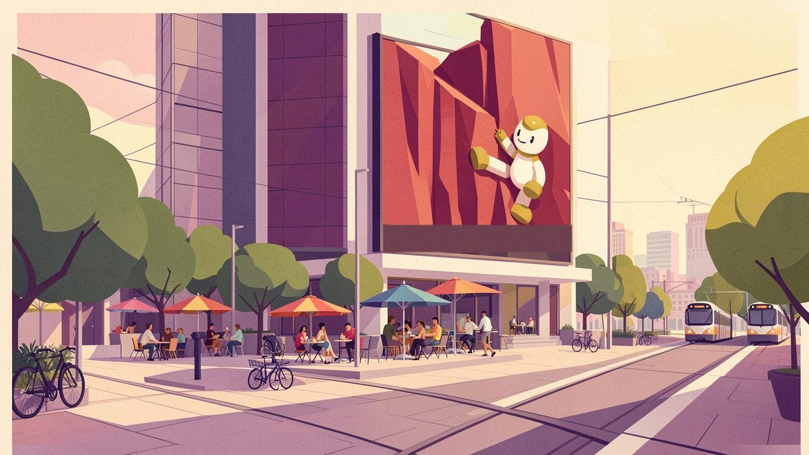
"Nobody has to work any more. Some people spend their freedom crossing a strange world with their bare hands."
Lore and story
A sport for a universe with time on its hands
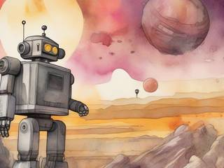
In the AAL universe's peaceful age, nobody needs to work. People chase whatever they like: art, science, romance, adrenaline. One of the most popular ways to chase adrenaline is the Voyager Challenge, an endurance sport somewhere between an Ironman race, The Amazing Race and Robinson Crusoe.
Contestants never leave home. Through a VR headset and a hyperwave link, a contestant's mind takes over a real robot body waiting on a remote world, and has to get it to the leg's landmark: a natural wonder, an old ruin, a famous building, a person to meet, an extraction point.
The courses
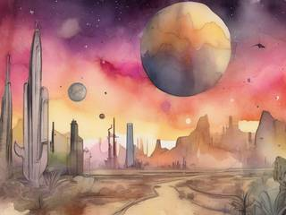
The courses run through places the galactic community has charted but not joined. Some are wild planets with no one on them at all. Others belong to neutral alien civilizations that get along with humanity fine but haven't yet worked out how to look after everyone: bustling neon cities run on money and hustle, and rough frontier towns of scavengers, farmers and nomads.
The rule of the sport is simple: the body arrives with nothing. No tools, no weapons, no cash. Whatever it needs, it makes or finds there.
The race right now
Your body has just been dropped at the start of a new course. There's a landmark on the horizon and a hint about where the next leg might be. Put the headset on.
Controls and interface
The robot body is controlled from the side, like a classic platformer hero with a few extra skills: it runs, jumps, swims, climbs grids and walls in the background, climbs ropes in any direction, and grabs, tosses and drops things. It can't fly, double jump or dash, and it has no built-in weapons or tools. Just two capable hands.
Move
A / D
Walk; hold Shift to run
Space
Jump
W / S
Climb ropes, ladders and grids; swim; crouch
Hands
E
Grab, pick up, drop
Left click
Use what's in your hands
Right click
Throw it toward the pointer
Q
Swap what's in your hands with your pack
Pack and fabricator
I
Inventory
F
Fabricate (only beside a power source)
C
Hitch or unhitch a cart, sled or tethered bag
Interface
M
Leg map: the landmark and the next-leg hint
Tab
Body status: battery, heat, pressure, damage
Esc
Pause; lift the headset
The body status is the only meter that matters, and it's about the machine, not a stomach: how much charge the battery holds, and whether the heat, cold, pressure or radiation around you is more than this body is built for.
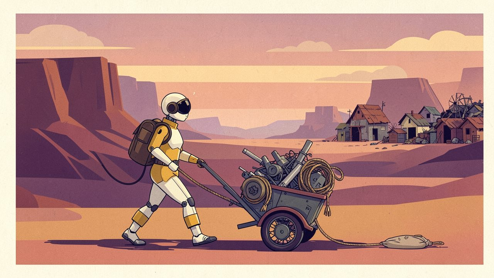
"The bag holds what you need. The cart holds what you might. Each one slows you down a little more."
Game layers
01 · Moment-to-moment
Making do
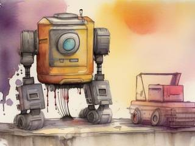
Arrive with what you packed. Look around: what's here, what's scarce, where's the power? Scrounge, climb, swim, haul. Find a vent or a socket, set up beside it, and fabricate what the next stretch needs: a raft, a rope, an insulated shell, a ladder, a cart. Then push on toward the landmark, carrying as much as you can stand to.
02 · Low metagame
A course
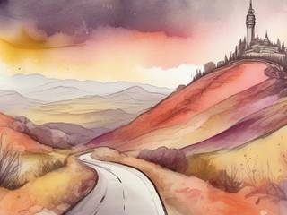
A course is a chain of legs across different places. You're dropped off at the first, as is customary, and every landmark you reach sends you on to the next. Between legs you get a hint about where you're going, and a moment to decide what to take: the only things that cross over are what you can carry.
A short course is a weekend; a long expedition crosses a dozen worlds.
03 · High metagame
The travel album
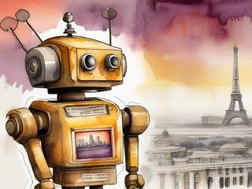
Every landmark you reach goes into your travel album as a snapshot of the body standing there, battered and proud, with the route that got it there and the odd contraptions that helped. It's a record of where you've been and how you got there: a memento, not a medal table.
The sport goes on forever, because the generator never runs out of courses. There's always another starting line somewhere strange.
04 · Practical game flow
One leg per evening
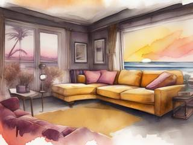
A leg takes an hour or so. Lift the headset whenever you like, which is the game's pause and save in one: the body waits exactly where you left it. There's no clock on the course. Your times are written in the album for your own interest, and nobody else's.
Game modes
There's one mode: the challenge, at any length you like. It nests:
The sportEndless: course after course, and an album that keeps growing.
A courseA chain of legs across different worlds: a weekend to a long expedition.
A legOne place, one landmark: an evening.
A stretchThe next obstacle and what it takes to cross it: a few minutes.
Features and mechanics
The heart of it
A fabricator in your arms
Imagine Subnautica's fabricator, built into your forearms. Feed it materials and it makes useful things straight away: ropes, rafts, carts, ladders, shells against heat or pressure, a generator, a pump. There's no stone age to climb out of and no workbench to build first.
The catch is power. The body's battery is small, enough to keep it moving and not much more, so fabricating means standing next to a real power source: a generator you've set over a geothermal vent, a wind or water wheel, a city socket, a junkyard engine coaxed back to life. Machines you build are the same: they need a power line, which pins them in place.
So every leg has a rhythm: find the power, set up beside it, make what the road ahead needs, and carry it away from the only place you could have made it.
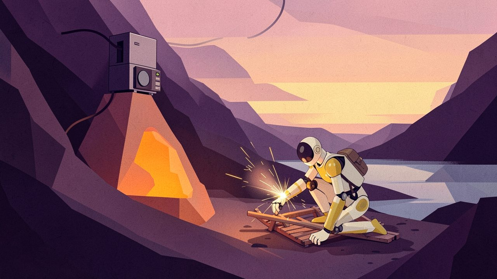
"The fabricator makes almost anything, but only while you stand next to power."
Travel light, or try not to
Carrying
The body's own inventory is small, and nearly everything you make is disposable: it wears out, breaks, or simply can't come with you to the next leg. To carry more, you build ways to carry, and each one costs you something:
Way to carry
The cost
Your hands and inventory
Nothing, but there's very little room
An extra bag
A bit slower, and you can't swim well
A cart or luggage
Needs flat-ish ground, and one hand to pull it
A tethered bag dragged behind a carried one
Clumsy: it snags, swings, and drags you back off ledges
A vehicle with cargo space
Needs a route, fuel or power, and has to be abandoned at the end
Not only islands
Three kinds of place
Unlike most survival games, Voyager isn't stuck on a desert island. Each kind of place turns the usual survival problem around:
Place
Plentiful
Scarce
How you get things
Wild planets
Raw natural resources
Anything made; every advanced part has to be crafted from scratch
Gather, mine, dig, fabricate
Neon cities
Finished goods, everywhere, behind a price
Anything free
Dumpster diving, shops, a lucky night at a casino, or sneaking into a guarded warehouse
Frontier badlands
Medium-grade parts and machinery, in junkyards
The basics: pure copper, organic material, simple stuff
Scavenge and trade with the villages, outposts and nomads
The cities and towns belong to neutral alien peoples who don't mind contestants, as long as they don't make trouble. You can't fight anyone anyway: you have no weapons.
What crosses over
Packing for the next leg
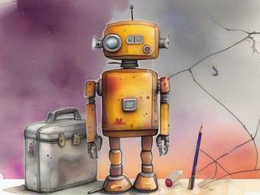
Near the end of each leg you get a hint about the next place: "somewhere cold", "a city that never sleeps", "deep water". Whatever you bring from here can let you skip a hard part there, make it easier, or do something that would otherwise be out of reach.
A coil of copper wire from a wild world is worth a fortune in a badland town. A bag of city electronics saves you a day of mining on a barren moon. Choosing what fills your few slots is the strategy layer of the whole game.
Locks you build through
Hazards and natural gates
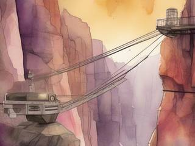
Each place is a generated side-view world with Super Metroid's lock-and-key structure, except the keys are things you build. Deep water needs a pressure shell or a raft. A lava cave needs insulation. A cliff needs a rope, a gap needs a bridge, a locked city gate needs a pass or another way round. The world's own nature makes the gates: no invisible walls, no doors that open because you've collected enough of something.
Heat, cold, pressure and radiation are measured against the body, not against meters ticking down. Stay inside its limits and it's fine; push past them and parts start failing.
It's only a body
Losing one
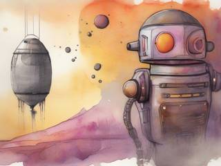
A robot body can be crushed, drowned, cooked or simply shaken apart. When it is, you lift the headset, unharmed, and the course sends a spare body to the leg's drop-off point, arriving with nothing, like the first one.
The world doesn't reset. Everything you built is still where you left it, and the old body's wreck, with whatever it was carrying, is wherever it fell. Go back for it, if you can.
Streamlined survival
One need, not ten
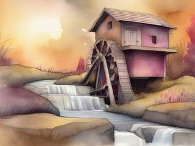
A robot doesn't eat, drink or sleep. That clears away the meters most survival games pile on and leaves one need with real consequences: power. It shapes everything, from where you can fabricate to how far you can range from a source and how long you can work a stubborn machine.
Mining is the same: soft ground digs by hand, Motherlode-style, while anything harder needs a tool, and a powered tool needs a charge.
Trivia
Three games from one notebook
Reactorcore played Terrene, a pixel-art planet explorer, liked its world of tall planet slices, and kept wanting it to be something else. The result was one long design for a planetary explorer, the Inspector, that tried to be everything at once, and then three remixes that each took one part of it and went all the way: this hands-only survival race, the gentle collectathon of AAL Collector, and the all-out assault of AAL Exterminator. Voyager is the one that threw away the starship.
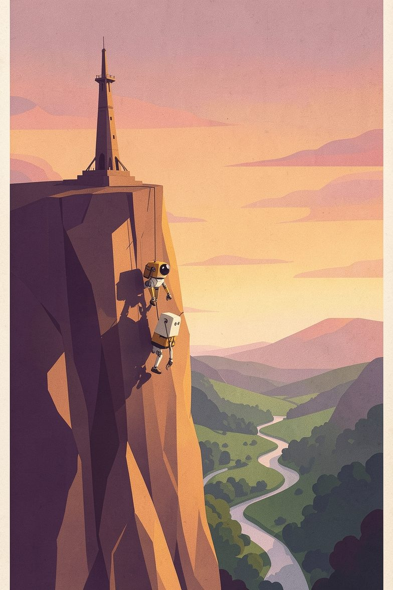
Your entry is confirmed
AAL Voyager: Robinson Survival Challenge
Your body is waiting at the starting line on a world you've never seen. It has two hands, a fabricator, a small battery and nothing else.
Somewhere past the jungle, the city or the junkyard stands a landmark. Get there. Pack what you can for the next one.